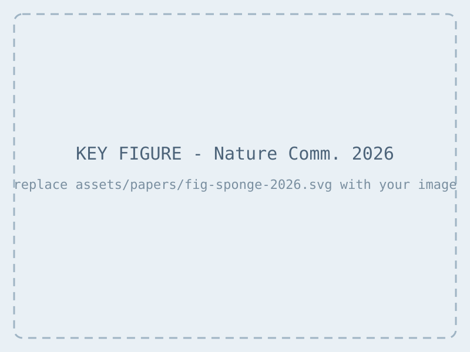

Metamaterials from the deep: optimized mechano-fluidic materials inspired by deep-sea sponges
Glass-sponge skeletons inspire lattice metamaterials co-optimized for strength and internal flow. With the Grigoropoulos and Koumoutsakos groups.